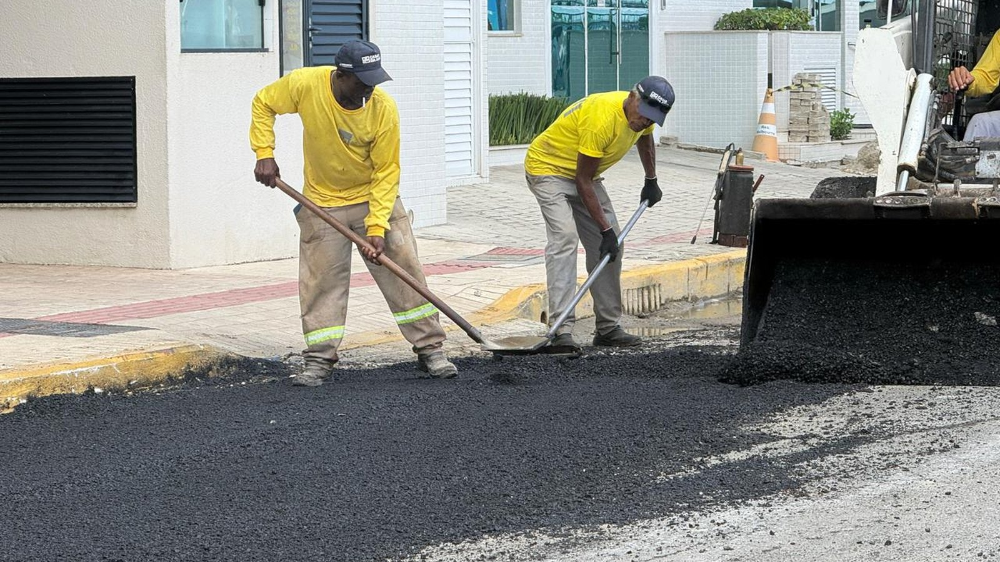

Itapema · Poder Público
Itapema · Poder PúblicoO projeto que proíbe obra nova na rua durante a temporada de Itapema voltou 585 dias depois, sem a comissão que daria assento ao Sinduscon e com a multa dez vezes menor
Quando a obra na rua pode acontecer.
A Prefeitura de Itapema publicou na segunda-feira, 28 de setembro, o edital do pregão eletrônico 23/2026. É um registro de preços de R$ 21.783.014,00 para tapa-buraco, recomposição asfáltica, lombadas e travessias elevadas. O valor é 31,1% maior que o do pregão equivalente de 2025, que saiu por R$ 16.617.365,00 e acabou homologado por R$ 8.089.960,00, 48,7% do previsto. Abrimos os doze itens dos dois editais e comparamos: a cidade pediu 42,9% menos tapa-buraco, 66,7% mais recomposição asfáltica e um terço a menos de lombadas e travessias elevadas. As propostas vão de 30 de setembro, às 8h, a 15 de outubro, às 10h01.
Em 30 segundos · Modo de Leitura, formato original Santa Informa
A Prefeitura de Itapema abriu uma licitação nesta semana.
Ela é para consertar rua.
Tapa-buraco, recapeamento, lombada e faixa elevada.
O edital saiu na segunda, 28 de setembro.
É o pregão eletrônico 23/2026.
O valor previsto é de R$ 21.783.014,00.
Isso é um teto, não é gasto certo.
O nome disso é registro de preços.
A Prefeitura fixa o preço e compra quando precisa.
Em 2025 teve licitação igual.
O previsto era R$ 16.617.365,00.
O fechado foi R$ 8.089.960,00.
Ou seja, menos da metade.
O previsto de agora é 31,1% maior que o de 2025.
Abrimos os doze itens do edital novo.
E os onze itens do edital antigo.
O asfalto leva R$ 16.407.764,00.
São 75,3% da conta.
As lombadas e as faixas elevadas levam R$ 5.375.250,00.
São quase um quarto.
A cidade pediu menos tapa-buraco que no ano passado.
10 mil m² agora, contra 17.500 m² antes.
E pediu mais recapeamento.
75 mil m² agora, contra 45 mil antes.
Trocou remendo por trecho inteiro.
Também pediu menos redutor de velocidade.
1.000 metros de lombada, contra 1.500.
1.000 metros de faixa elevada, contra 1.500.
O metro da lombada subiu 7,4% em 16 meses.
O da faixa elevada subiu 7,0%.
A faixa elevada custa 2,6 vezes a lombada por metro.
O edital não diz em que ruas isso vai ser feito.
As propostas abrem em 30 de setembro, às 8h.
E fecham em 15 de outubro, às 10h01.
A comparação entre os dois anos é conta nossa.
Ela não está somada em lugar nenhum.
InfraestruturaPublicada em Redação Santa Informa

A Prefeitura de Itapema publicou na segunda-feira, 28 de setembro, às 15h21, o edital do pregão eletrônico 23/2026, processo 154/2026. É um registro de preços de R$ 21.783.014,00 para serviços de recuperação de pavimentação asfáltica, tapa-buraco, recomposição, execução de lombadas e de travessias elevadas, para atender a Secretaria de Obras e Serviços Públicos. O valor previsto é 31,1% maior que o do pregão equivalente de 2025, que saiu por R$ 16.617.365,00. Só que aquele foi homologado por R$ 8.089.960,00, ou 48,7% do previsto. As propostas podem ser enviadas de 30 de setembro, às 8h, até 15 de outubro, às 10h01.
Abrimos os doze itens do edital, um por um, e somamos. O asfalto leva R$ 16.407.764,00, que são 75,3% do total: 10 mil m² de tapa-buraco divididos em quatro tipos, 45 mil m² de fresagem e 75 mil m² de recomposição asfáltica. O resto vai para o que segura a velocidade do carro. São 1.000 metros de lombadas, por R$ 1.492.210,00, e 1.000 metros de travessias elevadas, por R$ 3.883.040,00. Juntas, as duas coisas somam R$ 5.375.250,00, quase um quarto da conta. A travessia elevada, que é a faixa de pedestre no nível da calçada, sai por R$ 3.883,04 o metro, 2,6 vezes o preço da lombada comum.
Fizemos a mesma conta no edital do ano passado, o pregão 18/2025, e a comparação entre os dois não existe pronta em lugar nenhum. Itapema pediu menos tapa-buraco: 10 mil m² agora, contra 17.500 m² em 2025, queda de 42,9%. Pediu menos redutor de velocidade: mil metros de lombada e mil de travessia elevada, contra 1.500 de cada. E pediu bem mais recomposição asfáltica: 75 mil m², contra 45 mil, alta de 66,7%. Na prática, a cidade está trocando remendo pontual por recapeamento de trecho inteiro. Nos dois itens em que a descrição é idêntica nos dois anos, e por isso dá para comparar linha a linha, o metro de lombada subiu 7,4% e o de travessia elevada, 7,0%, em 16 meses e nove dias entre uma publicação e outra.
Vale guardar uma coisa antes de somar. Registro de preços é contratação eventual: a Prefeitura fixa o preço com a vencedora e vai comprando conforme a necessidade aparece, sem obrigação de gastar tudo o que está no edital. O número de 2025 mostra o tamanho dessa diferença, porque o edital previa R$ 16,6 milhões e a homologação ficou em R$ 8,09 milhões. Para dar tamanho ao teto de agora, ele equivale a R$ 245,19 por morador de Itapema, pela estimativa do IBGE para 2026, e essa conta é nossa.
O resumo de 30 segundos está no topo e a versão completa é o texto acima. Aqui ficam as três leituras da casa sobre o mesmo assunto.
Clara, a otimista
Tem uma linha nesse edital que vale reparar: mil metros de travessia elevada. É a faixa de pedestre erguida no nível da calçada, aquela em que quem atravessa não desce degrau nenhum e o carro é obrigado a reduzir. Para criança indo à escola, para idoso com sacola e para quem empurra carrinho, isso muda o dia. E não é promessa de discurso, está no papel, com preço e quantidade.
Gosto também da virada de 45 mil para 75 mil metros quadrados de recomposição. Remendo de buraco resolve por três meses. Recapear o trecho inteiro resolve por anos. A cidade parece ter percebido isso.
Seu Prudêncio, o criterioso
Merece atenção a distância entre o previsto e o realizado. O edital de 2025 previa R$ 16,6 milhões e foi homologado em R$ 8,09 milhões. Não é erro, é a natureza do registro de preços, mas quem lê a manchete guarda o número grande e nunca vê o pequeno. Uma sugestão útil: publicar, ao fim da vigência da ata, quanto foi de fato executado. É uma linha de informação e fecha a conta para o cidadão.
Vale acompanhar também a descrição dos itens. Em 2025 o edital dizia o material da recomposição. Em 2026 diz "conforme termo de referência". O preço por metro quadrado mudou bastante, e sem a especificação publicada junto ninguém de fora consegue saber se comprou a mesma coisa mais cara ou uma coisa diferente. Detalhar a descrição no próprio item custa nada e evita a dúvida.
Dito isso, o mérito está onde importa. Itapema pôs os doze itens abertos, com quantidade, preço unitário e total, no portal nacional, e com prazo de quinze dias para as propostas. Foi exatamente por causa dessa abertura que esta comparação entre 2025 e 2026 pôde ser feita por qualquer um. Muita prefeitura não dá esse material.
Caco, o sarcástico
Vinte e um milhões e oitocentos mil reais em tapa-buraco e lombada. Dá para dizer que Itapema tem buraco caro, ou que Itapema tem rua demais. As duas estão certas.
Meu item favorito é a travessia elevada a R$ 3.883,04 o metro, 2,6 vezes a lombada comum. Descobri que existe lombada de luxo e lombada popular, e que a diferença é o pedestre em cima.
Agora, reclamar de lombada em Itapema é esporte antigo, até o dia em que a rua é a sua e passa moto a oitenta. Aí a lombada vira pedido de abaixo-assinado. Que venham os mil metros, de preferência antes da temporada.
Fontes: o fato novo está no registro do pregão eletrônico 23/2026 de Itapema, publicado em 28 de setembro de 2026 no Portal Nacional de Contratações Públicas, que traz o objeto, o processo 154/2026, o valor previsto de R$ 21.783.014,00 e as datas de abertura e de encerramento das propostas. Os doze itens, com quantidade, preço unitário e total de cada um, foram abertos um a um no mesmo registro, e as somas por grupo são nossas. A comparação com o ano passado sai do pregão 18/2025, processo 69/2025, publicado em 19 de maio de 2025, de onde vêm o valor previsto de R$ 16.617.365,00, o homologado de R$ 8.089.960,00 e os onze itens daquele edital. Os percentuais de variação, a divisão entre asfalto e redutores de velocidade e o valor por morador são conta nossa. A foto do topo e o registro de como a operação de tapa-buraco funciona na rua estão em reportagem da própria Prefeitura de Itapema, de 19 de março de 2026. A estimativa de 88.842 moradores é do IBGE para 2026 e está detalhada no nosso Raio-X da Região. Sobre a mesma rua e o mesmo calendário de obras, veja o projeto que proíbe obra nova na rua durante a temporada e o que as contas de Itapema mostraram na audiência de setembro.
Itapema · Poder PúblicoQuando a obra na rua pode acontecer.
 Itapema · Infraestrutura
Itapema · InfraestruturaOutra obra de asfalto, com prazo e conta.
 Itapema · Poder Público
Itapema · Poder PúblicoDe onde sai o dinheiro que paga a obra.